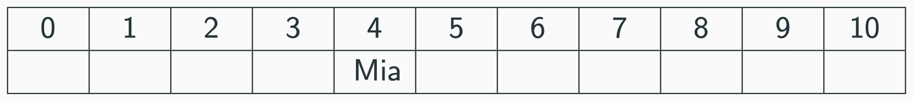
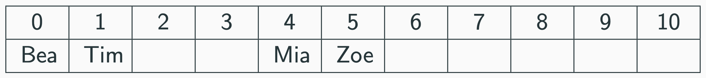
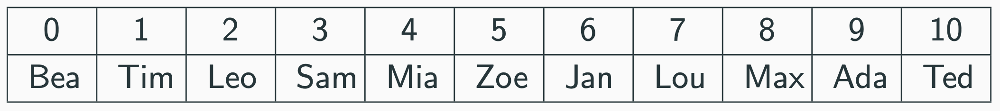
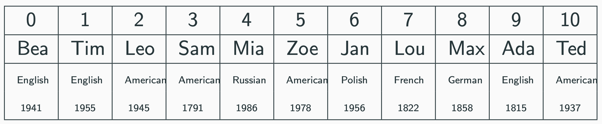
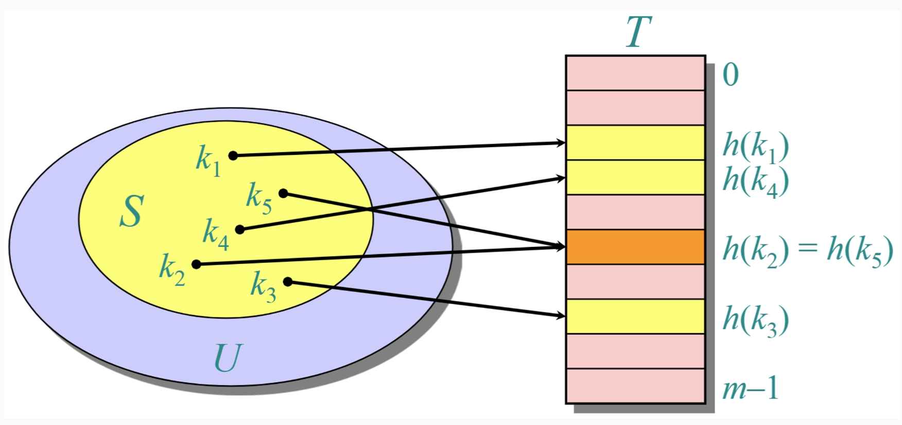
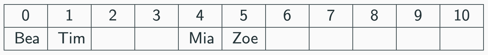
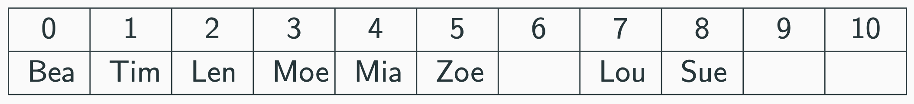
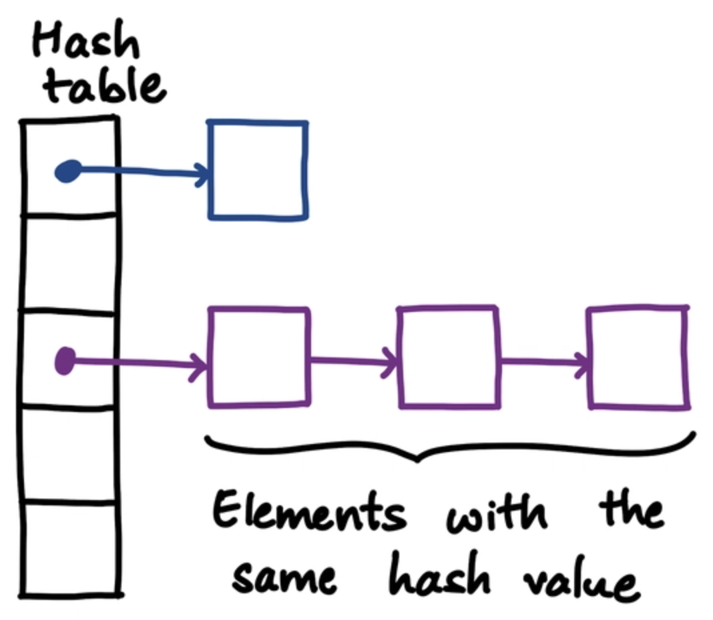

Goal: constant-time average insert, lookup, delete on key–value pairs.
- Array backing store
- Hash function maps keys to indices
- Collision handling strategy
SIMPLE ASCII HASHING
Compute an index from the element itself:
- Map each character to ASCII
- Sum the values
- Take modulo by table length
- Store at that position
Mia ⇒ (M + i + a) mod 11 ⇒ (77 + 105 + 97) mod 11 ⇒ 4

Applying to multiple names:
- Tim ⇒ 1, Bea ⇒ 0, Zoe ⇒ 5

Each key is mapped deterministically to an index.
All names placed by computed index:
Mia ⇒ 4, Tim ⇒ 1, Bea ⇒ 0, Zoe ⇒ 5, Jan ⇒ 6, Lou ⇒ 7, Max ⇒ 8, Ada ⇒ 9, Leo ⇒ 2, Ted ⇒ 10, Sam ⇒ 3

Time to access any known index remains constant.
RETRIEVING A KEY
To find Ada:
- Compute index: (A + d + a) mod 11 = 9
- Return array[9]
HASH TABLE MODEL
- Key–value pairs stored in an array of size m
- Hash function h(key) → {0,…,m−1}
- Average time for insert/delete/find: O(1) (with good hashing and low load)
OBJECT VALUES
Keys map to array indices, but the array stores pointers to arbitrary objects.
Key = name; Value = properties (e.g., nationality, birth year).

Same index mapping; values can be arbitrary records.
HASH FUNCTIONS
Map arbitrary keys to fixed-range indices.
- Division: h(key) = key mod n
- Mid-Square: square, take middle digits
- Folding: split and sum parts, then mod
- ASCII Sum (for strings): sum chars, then mod
HASH FUNCTION TYPES
- One-to-one (injective)
- Many-to-one (collisions inevitable when |keys| > |table|)
HASH COLLISIONS
Different keys can map to the same index.

Example: Mia ⇒ 4; Sue ⇒ 4 (mod 11)

We need a collision resolution strategy.
COLLISION RESOLUTION
- Open Addressing: probe for a new slot
- Chaining: maintain a list at each slot
LINEAR PROBING
Probe sequence: h′(key, i) = (h(key) + i) mod m
- Start i = 0
- While occupied: i ← i + 1
- Place at first empty slot
Mia ⇒ 4; Sue collides at 4 ⇒ try 5 ⇒ 6
-
i = 1,h′(Sue,1) = (4 + 1) mod 11 = 5
-
i = 2,h′(Sue,1) = (4 + 2) mod 11 = 6
- Tim ⇒ 1
- Len ⇒ 1 → 2 (collision)
- Bea ⇒ 0
- Moe ⇒ 3
- Zoe ⇒ 5
- Lou ⇒ 7
- Rae ⇒ 5 → 6 → 7 → 8
- Max ⇒ 8 → 9
- Tod ⇒ 9 → 10
Rae collides at 5
Rae ⇒(R + a + e) mod len ⇒(82 + 97 + 101) mod 11 ⇒5
-
i = 1,h′(Ray,1) = (5 + 1) mod 11 = 6
-
i = 2,h′(Ray,1) = (5 + 2) mod 11 = 7
-
i = 3,h′(Ray,1) = (5 + 3) mod 11 = 8
linear probing: lookup path
Find Rae: compute 5; probe 6, 7, then 8 → found.
Probes follow the same sequence used at insertion time.
LINEAR PROBING
- ✓ Simple; cache-friendly; no extra pointers
- × Clustering can degrade performance
QUADRATIC PROBING
Probe sequence: h′(key, i) = (h(key) + i2) mod m
- Reduces clustering vs. linear
- Requires careful choice of table size (often prime)
Mia ⇒ 4; Sue collides at 4 ⇒ try 5 (i=1) ⇒ 8 (i=2)

Non-linear jumps distribute probes more widely.
QUADRATIC PROBING
- ✓ Less clustering; efficient under moderate load
- × May not visit all slots unless m is chosen well
CHAINING

Each slot stores a dynamic list of keys hashed there.
- Compute h(key)
- Insert at head or tail of the list at that slot
CHAINING: SEARCH COST
Load factor α = n / m.
- Unsuccessful search: Θ(1 + α)
- Successful search: Θ(1 + α/2)
CHAINING
- ✓ Insertions always succeed; deletions are simple
- ✓ Less prone to clustering; supports unbounded growth
- × Pointer overhead; worst-case list can be long if hashing is poor
CHOOSING HASH FUNCTIONS
- deterministic
- efficient (O(1))
- uniform distribution; minimizes collisions
- works across data types (can hash different keys)
- avalanche effect (small change in data results in big changes in hash values)